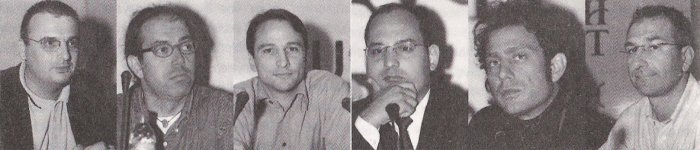

|
ADesign
Fair 2004 Panel tarihi: 07-10-2004
Yer: Harbiye Askeri Müzesi - Ahmet Fethi Paþa Salonu,
Ýstanbul
Moderatör:
Hakan Ertem, Bölüm Baþkaný, Marmara
Üniv. GSF Endüstri Tasarýmý Bölümü
Konuþmacýlar:
Mehmet Erkök, Öðretim Üyesi, ÝTÜ
Burak Pekcan, Ýnfotron
A.Þ.
Erkut Neðiþ, Cadem
A.Þ.
Can Yalman, Serbest
Tasarýmcý
Barýþ Ünver, Tofaþ
A.Þ.
|  |
|
Hakan
Ertem
|
Mehmet
Erkök
|
Burak
Pekcan
|
Erkut
Neðiþ
|
Can
Yalman
|
Barýþ
Ünver
|
Hýzlý
prototiplemeyle mertlik bozuldu mu? Bir tasarýmýn üretimine
geçmeden önce prototipini hazýrlamak, mevcut süreç içinde
önemli bir yere sahip. Peki, bu süreç içinde "elle modelleme"
yöntemini mi tercih etmeli? Yoksa, teknolojiye ayak uydurarak
hýzlý prototip sitemlerini mi kullanmalý?
Hakan
Ertem:
Burada
bugün tartýþacaðýmýz temel konular: Sistemler tasarým süreci
içinde bir anlatým tekniði mi? Yoksa, bu sistemler süreci
oluþturan öðelerden biri mi olmaya baþladý? Bu sistemlerin
nasýl kullanýlmasý gerekiyor? Bu baðlamda, çok sevgili dostlarým
ve ayný zamanda bu konuda uzmaan katýlýmcýlarýmýz var.
Ýzninizle,
onlarý tanýtayým. Öncelikle, ben Hakan Ertem. Marmara Üniversitesi
Güzel Sanatlar Fakültesi Endüstriyel Tasarým Bölüm Baþkaný'yým.
Mehmet Erkök, Ýstanbul Teknik Üniversitesi'nde öðretim üyesi.
Burak Pekcan, Ýnfotron firmasýndan. Hemen yanýnda ýse, Cadem
firmasýndan Erkut Neðiþ var. Can Yalman, serbest tasarýmcý
olarak burada bulunuyor. En son, Barýþ Ünver Bey, Tofaþ adýna
katýlýyor.
Þimdi,
her birimiz kendi bulunduðumuz noktadan konuya bakýþýmýzý
size aktarmaya çalýþaca~ýz. Ilk sözü, hiç uzatmadan Erkut
Bey'e verece~im ve kendisinden, her þeyden önce, bu bahsetIý~imiz
aletlerin ne olduðuna dair bir temel bilgi vermesini rica
edeceðim. Buyrun efendim.
Erkut
Neðiþ:
Ýyi
günler. Söylemek istediklerimin 8 dakikalýk konuþma içine
sýðdýrýlmasý imkansýz. Ama, çok kýsaca, panelin baþlýðýndan
yola çýkarak, hýzlý prototipten bahsetmek istiyorum;
- Neden
hýzlý?
- Neden
prototip üretme ihtiyacý var?
- Peki,
bu hýzlý prototip üretme ihtiyacý yeni bir þey midir? Yani,
15-20 yýllýk geçmiþi olan bir þey midir? Yoksa, insanlýk
yüzlerce yýldýr hýzlý prototip ihtiyacý duyuyor mu?
- Hýzlý
prototip, sadece beyaz eþya, otomotiv ve uçak sektöründe
mi gerekiyor? Herhangi bir sosyal konumda, elektronikte
baþka bir þeyde hýzlý prototip ihtiyacý olmaz mý?
Kýsaca
bunlardan bahsedeyim.
Eðer,
yeni ürün geliþtiriyorsanýz, yani yeni bir þey yapýyorsanýz,
doða kurallarýný kafanýzda canlandýrýyorsunuzdur. Hesap kitap
yapma kabiliyetiniz vardýr. Tasarlarsýnýz, üretmeyi planlarsýnýz.
Ne kadar iyi hesaplasanýz da bazý soru iþaretleri hiç bir
zaman kafanýzdan silinmeyecektir. Bu yüzden, gerçek ürünü
üretmeden evvel, veya seri imalata geçmeden evvel, bir þekilde
bir prototip üretip onu test etmek ihtiyacý hissedersiniz.
Her ne kadar, bilgisayar teknolojisi çok hýzlý geliþse de,
hesaplama teknolojileri çok ilerlese de, insanlarýn prototipe
olan ihtiyacý biraz azalsa da, insanlar sürekli daha karmaþýk
tasarýmlar yapmak istedikleri için, prototip ihtiyacý hiçbir
zaman bitmeyecek, artarak devam edecek. Mesela, sanal prototip
kavramý var; Yani, fiziksel bir þey üretmeden önce, bilgisayar
üzerinde bir þeyin prototipini yapýp test edebilirsiniz. Bir
problem görüp, tasarýmý revize edebilirsiniz. Fakat, yine
de son bir fiziksel prototip yapmadan, kimse tasarýmýn doðru
olduðuna emin olamaz.
Yani,
bir prototipin hýzlý olmasý, eskiden beri istenen bir þey.
Kimse bir prototipin yavaþ olmasýný istemez. Ama, bu hýzlý
prototip kelimesiyle, yeni bir üretim teknolojisi olan, son
20 yýlda geliþen, otoinþa teknolojisi arasýnda bir baðlantý
olduðu için, insanlar genellikle hýzlý prototipin otoinþa
teknolojisiyle ayný olduðunu düþünüyorlar.
Otoinþa
nedir? Yeni bir þey imal ederken, insanlarýn ilk aklýna gelen,
bir hammaddeyi alýp yontmaktýr. Yani, heykeltýraþlýk gibi.
Bunun son teknolojisi de, CNC tezgahlardýr. Lazerle, kesici
takýmlarla, frezede bir þekilde yontarak bir ürün imal edebilirsiniz.
Kalýp yaparsýnýz, prototip yaparsýnýz, model yaparsýnýz...
Otoinþa tekniði ise yontmanýn aksine ekleme prensibini kullanýr;
Yüzlerce, binlerce yýldýr bir þey ekleyerek imal etme, genelde
çok büyük cisimlerde kullanýlýyordu. Yani bir binayý yaparken,
koca bir daðý yontmak yerine, küçük tuðlalarý birbirine birleþtirerek
kat kat bir binayý yapmak, çok daha mantýklý ve uygulanan
yöntemdir. Ýþte, son 20 senede, bu inþaat tekniði küçük ölçekteki
imalat uygulamalarý için çok otomotize edilmiþ hale getirildi.
Çok kompleks bir plastik parçayý, insan gözünün zor göreceði
çok küçük partikülleri, bilgisayar kontrollü cihazlarda bir
araya getirerek üretebiliyorsunuz.
En
fazla 15-20 yýllýk bir geçmiþi olan otoinþa teknolojileri
hýzlý prototipte çok yaygýn kullanýldýðý için, insanlar genellikle
hýzlý prototip cihaz deyince, otoinþa teknolojisiyle çalýþan
cihazlarý hatýrlýyor. Aslýnda, burada bir hata var. Çünkü,
otoinþa cihazý olmadan da hýzlý prototip yapabilirsiniz. Yani,
hedefiniz yapacaðýnýz testlerdeki iþinizi karþýlýyorsa..;
örneðin, bir bardak tasarladýnýz, 'Acaba, elle tutarken bunun
çapý benim elime uygun mu?' diye merak ediyorsunuz. Bir kartondan
da bunu kesip yapabilirsiniz. Ýlle de bir torna tezgahý veya
hýzlý prototip tezgahýna ihtiyacýnýz yok. O sizin prototip
ihtiyacýnýzý görür. Yani, ihtiyacýnýza baðlý bu.
Otoinþa
teknolojisi sadece prototip imalatýnda kullanýlmýyor; Son
zamanlarda, artan bir hýzlý kalýp imalatý, hatta direkt imalata
geçiþ var - hiç kalýp olmadan...
Peki,
Türkiye'deki hýzlý prototip ihtiyacý ne yöne doðru gidiyor?
Bir ürün
tasarlarsýnýz, seri imalatta problem yaþayacaðý ihtimaline
karþý da prototip yaparsýnýz. Eðer, taklit ürün yapýyorsanýz,
zaten ürün piyasaya çýktýðýnda tutulacaðýný biliyorsunuz,
nasýl çalýþtýðýný biliyorsunuz. Dolayýsýyla bir prototipe
ihtiyaç duymazsýnýz. Yani, yýllarca Türkiye'de çok fazla taklit
yapýldýðý için prototip ihtiyacý da yoktu. Hýzlý prototip
makinesi denilen bu otoinþa cihazlarýnýn Türkiye'deki kullanýmý
da çok azdý veya yoktu. Çünkü, zaten bilinen þeyler üretiliyordu.
Tek problem "Onu nasýl daha ucuza üretirim?"di.
Zamanla, Gümrük Birliði çerçevesinde Türkiye'de Avrupa Topluluðu
Patent Kanunlarý'nýn uygulamaya girmesiyle, firmalar kendi
tasarýmlarýný yapmaya zorlandý. Bu konuda, ilk baþlayan Arçelik.
Arçelik, þu an en fazla cihazýn bir arada bulunduðu, en farklý
teknolojilerin bulunduðu bir firma.
Peki,
niye hýzlý? Ýnsanlar, her devirde hýza ihtiyaç duymuþtur;
Sultan Mehmet Ýstanbul'un fethi için zamanýnýn en büyük toplarýný
birçok hesaba dayalý olarak tasarlatmýþtý ama (bu hesaplara
tam güvenemeyeceði için) gerçek imalata geçmeden evvel birkaç
protoip top döktürüp atýþ testlerini yaptýrtmýþtý. Sultan
Mehmet'in bu toplarýn geliþtirilmesi için fazla zamaný olduðu
söylenemez. Yani yüzlerce sene evvel yaþamasýna raðmen onun
da hýzlý prototipe ihtiyacý vardý.
Ama,
bu devirde hýzlý prototipe daha da çok ihtiyaç duyuyorlar.
Çünkü, bugün dünyanýn öbür ucundaki bir firma bile, artýk
sizin rakibiniz olabiliyor. Kapalý bir ekonomide, zaten rakibiniz
bellidir. Eskiden üç senede bir ürün çýkarsanýz bile, müþteriniz
tatmin olabilirdi. Ama bugün, müþteriler belki ayda bir yeni
ürün bekliyor. Rakibiniz bunu yaptýðý için, siz de yeni ürün
çýkartmak zorunda kalýyorsunuz. Dolayýsýyla, bir prototipi
daha hýzlý üretmenin ihtiyacý sürekli artýyor.
Panelin
baþlýðýnda yer alan 'zanaat' kelimesine gelirsek; Eskiden,
belki bir prototipi el maharetiyle yapmak bir hafta sürerdi.
Sadece, yetenekli ustalarýn yapabildiði bir iþti ve ayrý bir
zanaattý. Ama þimdi, o kadar çok yazýlým, donaným cihaz var
ki, hangisini nerede, nasýl kullanýlacaðýný bilmek, aslýnda
bir zanaat haline geldi. Ýþin zanaat tarafý da gün geçtikçe
bu oluyor. Bir de, teknoloji çok hýzlý deðiþiyor. Bunu takip
etmek ve anýnda ve baþarýlý bir þekilde uygulamak da ayrý
bir zanaat.
Hakan
Ertem:
Teþekkür
ederim. Burak Pekcan Bey infotron'dan geliyor. Bize bu konuda,
herhalde iþletme aðýrlýklý bir sunum yapacaksýnýz deðil mi
hocam?
Burak
Pekcan:
Kýsa
bir sunum yapacaðým. Öncelikle Ýnfotron'u tanýtmak istiyorum.
Ondan sonra bu teknolojiyi almak mý lazým, yoksa servisini
mi almak lazým, onun bir karþýlaþtýrmasýný yapmak istiyorum.
Ýnfotron
olarak, 10 senedir faaliyet gösteriyoruz. Amacýmýz, hedef
endüstrilerde, otomotiv, dayanýklý tüketim ürünleri geliþtiren
firmalara, her türlü ürün geliþtirme teknolojilerini saðlayarak
veya yaratarak -'yaratarak' kelimesi çok önemli, olmayan þeyleri
de yaratýyoruz- hizmet veriyoruz.
Haziran
94'de kurulduk. Ýstanbul Altunizade'de merkezimiz var. Ankara'da
bir ofisimiz var. iMES Sanayi Sitesi'nde bir atölyemiz var.
Çoðu prototip servisini iMES'ten karþýlýyoruz. Münih'de de,
dünyaya açýlmak adýna bir ofisimiz var. Yaklaþýk 45 kiþiyiz.
Bu sayý, projelere göre artýp azalabiliyor.
Dünyaya
açýlmak istiyorsanýz, en önemli parametre 'kalite' olmalý.
Kalite konusunda çeþitli sertifikalarýmýz var. Çeþitli ödüller
kazandýk. Bizce en 'önemlisi, TUBÝTAK, TTGV ve TÜSÝAD'ln verdiði
Teknoloji Baþarý Ödülleri'ni 2002 senesinde kazandýk. Türkiye'de
ürün geliþtiren çoðu þirketle çalýþýyoruz. Otomotiv, telekomünikasyon,
dayanýklý tüketim, savunma sanayi olsun pek çok þirketle çalýþýyoruz...
Þimdi,
Hakan Bey yeni zanaat'ten bahsetti. Bence, pek yeni bir zanaat
deðil, bahsettiði. Biz, 10 sene önce bu iþe baþladýk. Neden
hýzlý prototipleme? Çünkü, hýzlý prototipleme çok basit bir
þekilde, kalýptan çýkacak ürünü elinizde tutmanýzý, yani kalýba
girmeden önce elinizde tutmanýzý, hatalarýný ve sorunlarýný
görebilmenizi saðlýyor. Yani,
en önemlisi, tasarýmla mühendislik arasýndaki iletiþimi saðlýyor.
Daha sonra, montaj kontrolünü, fonksiyonel teste girmesini
saðlýyor. Ayrýca, pazarlamaya destek de oluyor. Görsel bir
prototip de olabiliyor.
Þimdi,
"Nerede hýzlý prototip?" Bu zamanýn sorusu, bence
bu olmalý. Sonuçta, ürün geliþtiriyorsanýz, kesinlikle hýzlý
prototipleme, ya da bir þekilde model yaptýrmanýz gerekiyor.
Bunu þirket içerisinde mi yapacaksýnýz? Yoksa, bizim gibi
bir servis bürosundan mý destek alacaksýnýz? Þirket içinde
olmasý ne zaman gerekli? Senede birçok ürün geliþtiriyorsanýz,
bu tür bir
prototip cihazýna ihtiyacýnýz var. Ýkincisi, el altýnda bulunmasý.
Ayrýca, bu prototipleme teknolojileriyle donatýlmýþ bir atölyeniz
varsa, ürünün bitiþlerini yapabilecek elemanlarýnýz varsa,
sizin için çok büyük bir artý deðer de kazandýrýyor. En onemli
nokta, gizlilik. Çünkü, prototip için tasarýmý bir servis
bürosuna yolladýðýnýzda, ne kadar gizli kalacaðý servis bürosuna
baðlý bir durum. Tabii, bunun yaný sýra, negatif tarafý da
var. Bu sistemlerin, teknik desteðe ihtiyacý var. Teknolojinin
güncel olmasý, stok malzeme tutabilmeniz, atölye ortamý gereksinimi
ve eleman gereksinimleri var. Bunlarýn hepsini alt alta sýraladýðýmýzda,
niye hýzlý prototip servisinin pahalý olduðu anlaþýlabilir
herhalde. Yoksa, yapýlan þey hakikaten malzeme olarak fazla
deðil, ama bu tür masraflar yüzünden oldukça maliyetli olabiliyor.
Peki
servis bürosu ne zaman kullanýlabilir? Seyrek tasarým Yapýyorsanýz,
böyle bir cihaza sahip olmak biraz lüks olabilir. Uygulamalarýnýz
çok deðiþikse, bir teknolojiden yararlanýrken deðiþik bir
teknolojiden de yararlanmak istiyorsanýz, neyi nasýl yapacaðýnýzý
bilmiyorsanýz, bir servis bürosu sizin için daha yararlý olacaktýr.
Son teknolojileri uygulayarak, size en uygun prototipi saðlayacaktýr.
Peki,
"hangi teknoloji en iyi?" diye sorarsanýz, þöyle
cevap verebilirim: Deðiþik prototip teknolojileri var; SLA,
SLS, FDM, Polyjet, inkjet, 3D Printer vs. Bize kalýrsa bunlarýn
hiçbiri tek baþýna 'en iyi' deðil ama hepsi de en iyi. Sonuç
olarak, ne yapmak istediðinize baðlý olarak, deðiþik teknolojiler
kullanýlabiliyor. Biz www.prototip.org
olarak, bu danýþmanlýðý, servisi vermeye çalýþýyoruz. Yalnýzca
Türkiye'de deðil, dünyada da vermeye çalýþýyoruz. Hýzlý prototiple
hýzlý kalýplama, modelleme servislerini prototip.org'da vermeye
çalýþýyoruz.
Bize göre vizyon nedir? Bize göre, 5-10 sene sonra, artýk
hýzlý prototipleme deðil, hýzlý imalat olacak.
Hakan
Ertem:
Burak
Bey, çok teþekkür ediyoruz. Aramýzda Barýþ Ünver var. Barýþ
Bey, Tofaþ Ar-Ge Bölümü'nde endüstriyel ürün tasarýmcýsý olarak
görev yapýyor. Barýþ Bey'den de otomotiv sanayindeki veya
büyük bir iþ organizasyonu içindeki tasarým sürecinde bu sistemlerin
nasýl kullanýldýðýný, karþýlaþýlan sorunlarý öðrenelim;
Barýþ
Ünver:
Çok
teþekkür ederim. Þimdi, otomobil tasarýmýnda ve geliþtirme
sürecinde, hýzlý prototipieri anlatayým biraz size. Ýlk baþta,
"Otomobil nedir?" diye baþlarsak iþe; otomobil taþýt
aracý olmasýna raðmen, herkes için çok farklý þey ifade eden
bir ürün. Yani, herkesin ihtiyaçlarýný, isteklerini karþýlamasý
çok zor olan, ayrýca doðal etkileri açýk ve hareket halinde
olan bir nesne.
Otomobil
birçok endüstriyel üründen oluþan bir sistem. Dolayýsýyla,
oldukça zor ve uzun bir geliþtirme süresine ihtiyaç duyuluyor.
Ýþte, görüldüðü üzere, yaklaþýk 120 ay yani 10 yýllýk bir
süre var aslýnda bir bir otomobili piyasaya çýkarmak için.
Arkasýnda 10 yýllýk bir çalýþma var. Bu sürenin, yaklaþýk
6 yýl kadarý, planlama safhasý olarak harcanýyor. Sanal bir
dünya aslýnda bu. Geri kalan kýsmý da ürünün somutlaþtýrýlýp
gerçekleþtirilmeye baþlanýlan kýsýmý olarak ayýrabiliriz.
Bu sanal dünyaya baktýðýmýzda; stratejilerin ve pazarýn tahminleri,
farklý buluþlarýn araba teknolojisine entegre edilmesi, deðiþik
yaratýcýlýklarla ortaya çýkan "konsept" tasarýmlar
ve bir sürü beyin fýrtýnasý ortaya çýkýyor. Yani, her þey
havada, ama bir yandan da büyük araþtýrmalar yapýlarak bir
yerlere oturtulmaya çalýþýlan bir süreç var.
Burada,
tabii prototip ihtiyacý var. Burada da prototipler yapýlýyor.
Bunlar autoshow'larda gösterilerek, potansiyeller araþtýrýlýyor.
Daha sonra, gerçek hayata geçiliyor. Bu da yaklaþýk 4 yýl
gibi bir süre alýyor. Bu noktada da bir karar verme aþamasý
var. Tasarýmýn dondurulmasý ve bunun üzerine mühendislik iþlerinin
girerek o arabanýn yürür hale gelmesi durumu var. Burada da
birçok farklýlýklar ortaya çýkýyor ve bir prototipleme ihtiyacýmýz
oluyor. Sanal dünyadaki prototip ihtiyacý, genelde yoðun bir
prototiplemeyle de karþýlanabilir. Yani, daha çok, kavramý
ortaya çýkarmak, görselliði öne çýkarmak yeterli. Henüz ürünün
çözülmüþ olmasý, endüstrilleþme bölümünün halledilmiþ olmasý
gerekmiyor. Sonuçta, buradan çýkan prototip, aslýnda büyük
bir maket diye düþünülebilir. Fakat, gerçek hayata geçtiðinizde,
her þey çok daha farklý. Çok büyük bir rekabet ortamý olduðu
için, hýz çok önem kazanýyor.
Ayrýca,
prototipin otomobil gibi bir üründe gerçekleri yansýtmasý
çok önemli. Bu
araba harekete geçtiðinde ya da bu parça kullanýldýðý zaman,
onun yýllar içinde nasýl bir performans göstereceðini prototiplerden
anlayarak, gerçeðini yapmanýz gerekiyor. Burada da ihtiyaç
hýzlý prototip. Tabii ki, burada hýza ihtiyaç var. Hem de
seri üretim kalýplarý yapmadan. Genelde, stil onaylarýnýn
alýnmasýnda prototipler çok iþe yarýyor. Proje doðrulamasý
yapýlýyor. Birçok parçadan bahsediyoruz. Artýk, bu parçalarýn
hepsi toparlanýp elle tutulur hale geldi. Yeni yapýlan parçalarýn
da kendi ergonomik problemleri var mý yok mu? Daha sonra,
bunlarýn birleþtirilmesi sýrasýnda, montajdaki problemleri
ya da üretim sýrasýnda çýkabilecek problemleri görmek için
de hýzlý prototipe ihtiyaç duyuyoruz.
Dolayýsýyla,
burada bir eksik parça varsa hýzlý prototiplemeyle haritada
yapýp, sistemi tamamlayýp testlere baþlayarak zaman kazanmaya
çalþýyoruz. Tabii, hýzlý prototipleme de gerçeðe yakýn, hatta
birebir. Çok parça var gerçeði tamamen yansýtmasý istenen.
Bu yüzden çýkmýþ bir teknoloji bu.
Bir
boyutsal problemle de karþýlaþýyoruz; Otomotiv sektöründe
büyük parçalar var genellikle. En baþýnda bir tampon, bir
torpido var. Þu anda, onlarý tek bir parça halinde elde edebilmek
çok zor oluyor. Daha sonra, bu istediðimiz parçayý alýp, arabaya
takýp ya da bir sisteme birleþtirip görmemiz gerekiyor. Gelen
parçalarda,
ufak tefek milimetrik hatalar olduðunda, birkaç parça birleþince
hata santimlere varýyor ve önemli problemler çýkýyor.
Bir
diðer problem, genelde malzeme problemleri. Yani, hýzlý prototiplemenin
amacý, genelde bir gerçek parçayý simüle edebilmek. Fakat,
burada da gerçek malzemelere birçok katký malzemesi eklendiðinden,
performans daha artýyor ve burada ayný malzemeyi kullansak
da katký malzemelerinin eksik olmasýndan dolayý çok kýrýlgan
parçalar oluþuyor. Bunlarý gerçekten test edebilmek zorlaþýyor
bizim için.
Malzemenin
boyamasýnda bazen problem yaþýyoruz. Birebir bitmiþ bir örnek
göstermek istediðimiz zaman, zorlanýyoruz. Bütün bu dezavantajlarýna
raðmen, büyük bir firma için bile hala pahalý bir teknoloji
bu. Benim anlatacaklarýn; da bu kadar.
Hakan
Ertem:
Teþekkür
ederim. Sayýn Can Yalman aramýzda. Ben, Can'dan daha çok bir
tasarýmcý olarak, bir tasarým bürosu sahibi ve serbest tasarýmcý
olarak, bu teknolojileri nerde, ne zaman, ne kadar kullanabiliyor?
Þikayetçi olduðu yerler var mý? Çözüm önerileri var mý? Bunlarý
öðrenmek istiyorum.
Can
Yalman:
Teþekkür
ederim. Ýlerisi için düþündüklerimiz, çok uzakta deðil gibi
geliyor bana. Herhalde, bir 10-15 sene içinde mümkün olabilir.
Bir tasarým ofisi olarak, hýzlý prototip sistemleri, sonuçta
bizim ufkumuzu açmýþ durumda. Eskiden konvansiyonel sistemlerle
tasarým yapýyorduk, artýk CAD sistemlerini bir standart olarak
kullanýyoruz.
Teknik
çizimlerden 3 boyutlu tasarýma, elle yapýlan modellerden hýzlý
prototip sistemlerine bir geçiþ olmuþ durumda. Bu hýzlý prolotip
sistemleri, sonuçta eskiden büyük firmalarýn yapabileceði
iþleri, ufak tasarým bürolarýnýn da yapmasýna imkan saðlýyor.
Tasarým ofisi kurma maliyetleri bu sayede bayaðý düþmüþ durumda.
Yani, bir model atölyesinde, beþ modelci veya tasarýmcý olarak,
10-15 kiþinin yapacaðý iþi, hem 3 boyutlu tasarým sistemleri
hem de hýzlý prototip sayesinde, iki-üç kiþilik bir tasarým
ofisi de yapabilir duruma geldi. Biz hýzlý prototipi, genellikle
üç deðiþik kullaným alanýnda uyguluyoruz.
Birincisi;
konsept modelleme. Burada, görsel olarak deðil, ama biraz
hacim ve çalýþma sistemlerine fikir vermesi açýsýndan kullanýyoruz.
Mekanik
çalýþma analizi yapmak için, bizim piknik setinde kullandýðýmýz
klipslerin geçip geçmemesi gibi detaylar için kullanýyoruz.
Ýkinci olarak; sunuþ modeli yapmak için kullanýyoruz. Bu da,
gerçek ürünlere yakýn bir görüntü yakalamak için yapýlýyor.
Yani, ergonomi, geçme detaylarý ve genellikle hacim hesaplamalarý
için hýzlý prototipi kullanýyoruz.
Tasarým
geliþtirme aþamalarýnda, daha ürün þekillenmeden veya son
ürünün seçilme aþamalarýnda, ürünlerin prototip üzerinden
karar verilmesi gerekiyor. Seçim yapýlmasý çok daha doðru
oluyor, yani genellikle insanlar iki boyutlu çizim üstünden
çok fazla karar veremiyorlar. Ýlla ellerine almak, hissetmek
veya bir masanýn üzerinde nasýl duracaðýný görmek istiyorlar.
Piknik setini görmüþsünüzdür belki veya deðiþik standlarda,
özellikle çatal býçak ve kaþýk modellerini. Ergonomi açýsýndan
bunlarýn prototipleri bizim için çok önemliydi. Ýnfotron'la
beraber STL modelleri hazýrlandý. Orada test edildi. Gerekli
deðiþikliler yapýldý, ondan sonra da son ürüne geçildi.
Ayrýca,
klipsden bahsettim, o klipslerin ufak bir parça detayý yapýldý.
Bunun çalýþmasý test edildi, o da onaylandý. Onaylandýktan
sonra, üretime geçildi. Yani, üretici açýsýndan bunlarý test
etmeden yapmak, ileride çok daha maliyetli sonuçlar ortaya
çýkarabiliyor.
Onun
için, yaptýðýmýz tasarýmda, genellikle müþterilere prototip
yapmalarýný tavsiye ediyoruz. Fiyatlarý biraz yüksek buluyorlar.
Hisar için yaptýðýmýz çalýþmada, çatal býçak serisinde, ergonomi
çok önemliydi. Müþteri de bunu eline alýp, hissetmek, tutmak
istediði için yine bu sefer FDM'den yapýldý prototipler. Ama
bizim tercihimiz, bunu direkt metalden iþleyebilmek. Bu biraz
daha zor bir çalýþma ve daha maliyetli. Biraz daha vakit gerektiren
bir þey hýzlý prototip açýsýndan. Belki, bunun kolay sistemleri
vardýr veya geliþtiriliyordur. Genellikle, insanlar iki boyutlu
çizim üstünden göremiyorlar. Yani, bir tasarýmcýnýn kafasýnda
canlandýrabildiði üç boyutlu tasarýmý, sadece bir görsel sunuþ
olarak algýlamalarý çok zor oluyor. Onun için, birçok müþteriden
bize özellikle talep geliyor. Karar vermek için ürünün prototipini
görmek istiyorlar. Hisar'da örneðin, son ürüne gelindiðinde,
sekiz tane tasarým vardý. Ondan sonra, iki tanesi için prototip
yapýldý. Bu prototipler üzerinden son ürüne karar verildi.
Sonuçta, çýkan tasarým onlar için daha doðru oldu.
RocaKale
ile çalýþýyoruz. Onlarla bir lavabo çalýþmamýz var. Lavaboda,
STL veya FDM gibi sistemler deðil de, CNC olarak çalýþmamýz
gerekti; MDF'yi CNC'de iþledik. Oto boyasýyla tam bir seramik
görünümü verdik. Son seçimler, yine öyle yapýldý.
Hýzlý
prototip, bizim için de ekonomik açýdan çok yararlý oluyor.
Hiç ofisten çýkmadan, direkt e-posta yoluyla, çizdiðimiz datalarý
gönderebiliyoruz. Karþý taraftan da prototipler elimize geliyor.
Ufak bir model atölyesiyle, bir sürü büyük tasarým firmasýnýn
yapabildiði imkanlarý biz de kullanabiliyoruz.
Bir
de yeni zanaat dendi. Yeni zanaat için de enteresan þeyler
var. Ýki hafta önce, 100% Design Show'da, Londra'da gezerken,
prototipin artýk sadece bir prototip malzemesi deðil de son
ürün olarak ortaya çýktýðýný gördük. Materialise diye bir
þirket var, böyle hýzlý prototipler yapýyor zannedersem, MGX
diye yeni bir ürün serisi çýkarmýþ (www.materialise.com/made).
Burada çýkan ürünler, tamamen prototip yöntemleriyle, STL
veya SLS yöntemleriyle yapýlmýþ aydýnlatma elemanlarý olarak
sergileniyordu. Ürünlerinin fiyatlarý da (büyük ihtimalle
sürümden çalýþtýklarý için) aslýnda normal aydýnlatma fiyatlarý
civarýnda. Kalýpla yapamayacaðýnýz bir sürü ürünü STL veya
SLS sistemleriyle yapmýþlar ve bunlarý sergiliyorlardý.
Yani
prototip, artýk yeni bir malzeme olarak, ürün olarak ortaya
çýkmýþ durumda. Yaþadýðýmýz en büyük sorunlardan biri, küçük
iþletmelerin, bu hýzlý prototip fiyatlarýný çok yüksek bulmasý.
Yani, bu piknik seti için örneðin, bütün setin kabýný prototipten
yapmak istediðimiz zaman, fiyatlar çok yüksek bulunuyor. Yani,
mümkün olduðu kadar, bu fiyatlarýn aþaðý çekilmesi Türkiye'deki
sanayici veya tasarýmcý arkadaþlar için de çok daha faydalý
olacak.
Benim
söyleyeceklerim bu kadar, teþekkür ederim.
Hakan
Ertem:
Þimdi,
yanýmda birazdan sözü vereceðim arkadaþým Mehmet Erkök, Ýstanbul
Teknik Üniversitesi'nde öðretim üyesi. Ayný zamanda, bu modelleme
teknikleri ve model üzerinde ders veriyor. Ben kendisine þunu
sormak istiyorum: Hoca, tüfek icat oldu, mertlik bozuldu
mu? Yoksa, bunlar böyle birbiriyle at baþý mý gidecek?
Mehmet
Erkök:
At
baþý gidecek tabii. Mertlik bozulmadý, ama pahalý hakikaten.
O yüzden de dengeIemek lazým. Ben, modelciliði iki türlü ele
alýyorum, öðrencilerime de bunu söylüyorum. Bunu söylemeden
önce, eðitimci gözüyle deðerlendirmeye çalýþýyorum. Hem iþin
o yanýndayým, hem de freelance olarak çalýþýyorum. iki tarafý
da biraz biliyorum yani.
Model,
tasarýmcýnýn kendisi için gerekli. Müþteri dediðimiz diðer
tarafa tarif edebilmemiz için gerekli. Çok karýþýk olacak
söyleyeceklerim, çok özür dilerim þimdiden. Çünkü söyleyecek
çok þey var bu konuyla ilgili. Bir kere, bizim bölümümüze
bir CNC freze tezgahý alýndý geçen sene. Bunu çalýþtýrmaya
baþladýk yakýn zamanda, önce biraz anlamaya çalýþtýk. Talaþlý
bir imalat yapýyor. Aslýnda, çok heyecanlanacak bir durum
deðil. Ýþte, bir traktörün tarlayý sürmesi gibi, bir parça
iþliyor.
Onun ötesinde, yýðma usulü çalýþan makineler filan, sahiden
de heyecan verici. Teknik olarak, þimdi bir makineyi aldýðýnýz
zaman, "Tamam, artýk ben oldum, her þeyi yaparým. Hatta,
þu iki maketçiyi de atalým iþten, olsun bitsin" düþüncesi
hakim. CNC ya da 3 boyutlu modelleme, olsa olsa tecrübeli
bir tasarýmcýnýn elinde çok iyi bir hale gelebilir. Tasarýmcýnýn
iþi, malzemeyle olduðuna göre, tasarýmcýnýn birtakým þeyleri,
bizzat eliyle yoðurmasý lazým. Genç bir tasarýmcýnýn eline
bir bilgisayarý ve arkasýndan da bir 3 boyutlu modelleme cihazý
koyduðumuzda, "Hadi bakalým, sen þimdi bununla çok güzel
formlar yarat" dediðimizde, muhtemelen yavan þeyler çýkabilir
ortaya. Ýyi þeyler de çýkabilir tabii.
Yine,
bir parantez açacaðým: Benim, 3 boyutlu modellemeye karþý
olduðum, sakýn ola anlaþýlmasýn. Tarafým aslýnda, ama elinizde
birtakým þeyleri yoðurduðunuz zaman, bunu uzun seneler yaptýðýnýz
zaman, mekanizmalarýn çalýþýp çalýþmadýðýný görebilme yetisine
sahip oluyorsunuz. Muhtemelen, birkaç adým öndesiniz zaten,
yani sonucu birazcýk daha iyi görme þansýnýz oluyor. Ya da
bilgisayarda çizim yaptýnýz ve onu 3 boyutlu görmek istiyorsunuz,
elde ediyorsunuz ve görüyorsunuz.
Bir
biçimin, tasarýmýn CNC tezgahlarda üretilmeyi hak edeceði
durumlar var, hak etmeyeceði durumlar var. Baþta pahalý dedik
ya, þimdi dümdüz bir yüzeyi CNC'de iþlediðiniz zaman, bu ciddi
bir maliyet ya da gereksiz bir harcama. Bunu elde de yapma
þansýnýz aslýnda çok yüksek.
Bir
tasarýmcý, nasýl ki el çizimi konusunda kendini geliþtirmeye
çalýþýyorsa ve bunu birtakým toplantýlarda, silah olarak kullanýyorsa,
bunun farkýna varýyorsa, karþý taraf bir bilgisayar çiziminden,
sunuþundan etkilendiði gibi bir tasarýmcýnýn modelinden de
çok etkilenir. Bunu çok sýk duyuyorum çevrede. Ayný þekilde,
bir tasarýmcýnýn modelcilik konusunda da asgari bir þeyler
yapabilmesi de çok önemli. Her þeyden önce, kendisini beslemesi
için.
Birkaç
gün öncesinden, bir benzetme yapayým diyorum. Bir tane benzetme
þu: Her ikisini de kullanmak derken, eðer 3 boyutlu modellemeyi
fastfood'a benzetirsek, evet ara sýra fastfood yemeliyiz hakikaten.
Ama, sürekli yersek çok yavan kalabilir. Baþka bir benzetme,
fotoðrafçýlýk mesela. Az önce, bir arkadaþ hepimizin fotoðrafýný
çekti ve manuel makineyle çekti galiba. Bir de dijital fotoðraf
makinesi aldýðýnýz zaman, "Tamam, artýk ben her þeyi
çekerim. Üstelik de çok güzel çekerim" diye düþünüyorsunuz.
Yalan, öyle bir þey yok. Mümkünse manuel, bir makineyle uðraþmalýsýnýz.
O zaman iyi piþiyorsunuz. Dijital fotoðrafçýlýk size her þeyi
veremez, ama 3 boyutlu modellemenin aksine, çok ucuzladý tabii
o...
Hakan
Ertem:
Ben
toparlamadan önce, birþey anlatmak istiyorum. Geçen sene Karim
Rashid geldi Türkiye'ye. Konuþmasý sýrasýnda birþey söyledi.
"Benim evimde bir tane hýzlý prototip makinesi var"
dedi. Evinde varmýþ o makine. "Gece rüyama giren formlar
olursa veya sabah kahvaltýda aklýma gelen bir þey olursa,
hemen onlarýn prototipini yaparým, öyle iþe giderim".
Yani, çok güzel bir þey. Umarým, bir gün benim de evimde öyle
bir þey olabilir. Olmamasý için sebep yok.
Çünkü,
þöyle bir örnek vereyim: Buradaki insanlarýn çoðu öðrenci
ve hatýrlamazsýnýz, 90'lý yýllarýn baþlarýnda CD'ler yeni
çýkmýþtý. Bir meslektaþým geldi dedi ki, "Abi, bunlara
kayýt yapýlýyormuþ". "Yok ya, olur mu öyle þey?"
dedik. Sonra, fiyatýnýn 5000 Dolar olduðunu öðrendik. Sonra
çok yayýldý, artýk herkesin elinde var. Dolayýsýyla, bu sistemlerin
nereye gideceðini az buçuk tahmin edebiliyorum. Çok yaygýnlaþacak,
günlük kullanýma girecek. Fakat, bir gerçek var: Cihaz, her
zaman kullananla vardýr. Yani, cihazýn geliþmiþliði, kompleksliði
veya sonuca etkisi, sizin ne yaptýðýnýzla doðru orantýlýdýr.
Siz, doðru bir þey yapýyorsanýz, o cihazdan da doðru þeyler
çýkar. Bence, hadisenin temeli bu noktada ve burada. Konuyu
manuel prototipleme veya modelleme sistemleri, dijital, elektronik,
adýna ne dersek diyelim, sistemleri ayýrmak çok doðru deðil.
Erkut
Neðiþ:
Belki
bilenler vardýr; www.TurkCADCAM.net/rapor/otoinsa
adresinde konuyla ilgili hazýrladýðým bir raporu görebilirsiniz.
Bu raporda her türlü bilgiyi bulabilirsiniz; Bu cihazlarý,
Dünya'da hangi firmalar üretiyor? Ýþin tarihçesi nedir? Nerelerde
kullanýlýyor? Hangi teknolojileri kullanýyorlar? Tüm bu bilgileri
kategorize edilmiþ þekilde, bol miktarda fotoðrafla birlikte
bulabilirsiniz. Hiç bilmeyen bir insana bile, sýfýrdan her
þeyi açýklayan kapsamlý bir rapor internette mevcut...
Hakan
Ertem:
Ayný
þekilde, infotron'un da benzer sitesi var: infotron.com.tr
Netice
itibariyle, tasarýmýnýzýn doðru olmasý, doðru kurgulamanýz,
doðru seçim yapmanýz çok önemli. Bunlarýn hepsi, amaca giden
yolda kullanýlacak bir araç. Aracý nasýl kullanacaðýnýz size
kalmýþtýr. Mühendislik yoðunluklu bir proje yapýyorsanýz,
belki tamamen bu sistemleri kullanacaksýnýz. Görsel niteliði
yüksek bir proje yapýyorsanýz, belki ara bir çözüm bulacaksýnýz.
Barýþ
Bey konuþurken, "konsept araçlar"dan bahsetti. Hani,
Paris Otomobil Fuarý'nda "Abi, bu araba üretilir mi?"
diyeceðimiz araçlar aslýnda. Onlarýn pek çoðu, evet elle yapýlýyor.
Ama, daha sonra, çok yüksek teknolojiye sahip makineler de
kullanýlýyor, uzay makinesi gibi. Bunlarýn hepsini, üst üste
koymak çok önemli.
Erkut
Bey, konuþmasýnda beni çok etkileyen bir cümle sarfetti: "Türkiye'de
eskiden, prototip denilen þey aranmýyordu. Çünkü, zaten taklit
ürün vardý. Bugün ise, belli nedenlerden dolayý, yeni ürün
tasarým süreçleri baþlatýldý. Bu yüzden de 'prototip süreçleri'
denen bir kavram gündelik hayatýmýza girdi." Demek ki,
en azýndan mesleki olarak, yeni bir sürece doðru geçiþ noktasýndayýz.
Çok ayrý bir noktadan, tamamen teknolojik bir noktadan teyidini
aldýk bunun. Bu bence çok önemli.
Burak
Bey, konuþmasýnda bu ürünleri satýn almanýn ve kiralamanýn
avantajlarý veya bu konuda nasýl bir çalýþma içinde olmamýz
gerektiði konusunda bizi aydýnlattý.
Barýþ
Bey, etkileyici bir þey söyledi. Bir otomobil tasarlayýp üretmek
için 120 ay, yani 10 sene gerekiyor. Bu aþamayý burada öðrendim
ve bu aþamada prototipin nerede ve nasýl kullanýldýðýný öðrendim.
Benim için önemliydi.
Can,
baðýmsýz tasarýmcý olarak prototipi üç noktada kullandýðýný
söyledi, ki bu da önemli bir ipucudur. Konsept çalýþmasý,
mekanik ve ergonomik analizlerden bahsetti. Bakýn, mekanik
ve ergonomik analizler önemli. Çünkü, mekanik çalýþma yapýlýrken,
bir yandan da insani boyutu atlanamaz. Yani, siz bir menteþe
tasarýmý yapýyorsanýz, o tasarýmýn nasýl montajlanacaðýný
düþünmek zorundasýnýz. Sonuç olarak bir de 'sunuþ modelleri'nden
bahsetti. Yani müþteriye göstereceði bölüm. "Çünkü, insanlar
ellemek istiyorlar" dedi.
Mehmet,
tüfeðin icat edilmesiyle mertliðin bozulmadýðýný bize söyledi.
Her ikisinin, at baþý yürüdüðünü, birinin diðerinin tercihi
olmadýðýný anlatmaya çalýþtý. Belki de kompleks bir yapý olduðunu
ve manuel sistemlerle bu en son sistemlerin birleþiminin zanaat
kavramýný oluþturduðunu anlatmaya çalýþtý. Siz, hýzlý modelleme
yaptýðýnýz bir ürünü, elinizle zýmpara yapýp, elle boyatýyorsunuz
belki de. Bunlar birbirlerinin içinde gidip gelen þeyler.
Sonuç olarak geldiðimiz nokta þu: Cihaz, alet ne olursa olsun,
iþ insanda bitiyor.
*ADesign
Fair 2004 Ýstanbul Uluslararasý Tasarým Buluþmasý kapsamýnda
düzenlenen panellerden birine ait bu yazý ve resimler, fuardaki
tüm konferans ve panelleri içeren art+decor
Dergisi Kasým 2004 ADesign Fair Özel Sayýsý'nýn ücretsiz
ekinden yararlanýlarak hazýrlanmýþtýr.
|